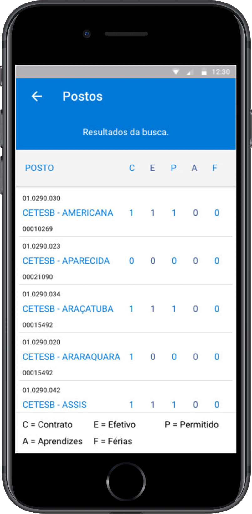

Introdução ao Desenvolvimento de
Apps com Ionic e Firebase

Roosevelt Fernandes
ONNZE Desenvolvimento de Apps e Sistemas
Empreendedor e desenvolvedor com mais de 10 anos de experiência em criação de produtos e formação de equipes.
https://www.linkedin.com/in/rooseveltfers/
Wesley Monaro
Desenvolvedor Freelancer
Estudante de Análise e Desenvolvimento de Sistemas na UMC. Desenvolvedor full-stack com foco em desenvolvimento mobile híbrido.
Diferença entre Nativo/híbrido

Diferença entre Nativo/híbrido

O que o Ionic usa?


Desenvolve sites? Você se sentirá em casa ;)
Angular
Framework para criação de SPAs
(Single Page Applications)
Extensão do HTML com novas tags
Mantido pelo Google
Otimizado para desenvolvimento de apps em larga escala
Permite criar apps de Alta performance
Docs: angular.io
TypeScript!
Desenvolva em JS de forma mais rápida
Linguagem fortemente tipada
Poderoso suporte de IDE: Auto-complete, intellisense, refactoring
Docs: typescriptlang.org
Sass!
CSS gerado pelo pré-processador Sass
Permite customização mais rápida e simples
CSS projetado para ser facilmente substituído
Permite uso de variáveis
Docs: sass-lang.com
Como tudo isso funciona?
- Seu App
- Ionic
- Angular
- Cordova
- SDKs nativos
Exemplos de componentes Ionic
Listas
- Diretivas AngularJS
- Botões expostos ao deslizar
- Reordenar
- Excluir
<ion-list>
<button ion-item *ngFor="let item of items">
{{ item.title }}
</button>
</ion-list>
Virtual Scroll
- Inspirado no iOS UICollectionView
- Scroll centenas de itens
- Renderiza apenas os itens visíveis
- Rolagem suave
<ion-list [virtualScroll]="items">
<ion-item *virtualItem="let item">
<ion-avatar item-start>
<ion-img [src]="item.avatarUrl"></ion-img>
</ion-avatar>
{{ item.firstName }} {{ item.lastName }}
</ion-item>
</ion-list>
Outros Componentes
- Side Menus
- Actionsheet
- Modal
- Pull To Refresh
- Spinners
- Slidebox
- Infinite Scroll
- Swipeable List Options
- Popup
- Popover
- Loading Overlay
- Inputs
- Buttons
- etc.
Ionicons

700+ ícones inclusos
Exemplos de apps que fizemos com Ionic
Portal Paineiras
ProdutividadeApp

Programação
- Apresentação
- O que é o Ionic?
- Explicação sobre TypeScript, Angular2 e Sass
- Documentações (Ionic, Angular, TS e Sass)
- Pré requisitos para rodar o Ionic (Node, NPM)
- Dicas sobre interface de apps
- Criando um projeto em branco
- Rodando a aplicação com Ionic Lab
- Criando uma página com o Ionic CLI e navegando entre elas
- Apresentação do Firebase/documentação
- Criando um app ToDoList com Firebase
- Adicionando plataforma Android no projeto
- Apresentação Genymotion
- Rodando o app no device/emulador
- Debugando com chrome://inspect
- Implementando tela de login e registro no nosso app ToDoList
- Explicando o conteito de PWA (Progressive Web App)
- Aplicando o arquivo manifest.json no nosso app
- Publicando nosso app no Firebase Hosting
- Explicando sobre os builds Android (.APK) e IOS (.IPA)
- Considerações finais
O que vamos desevolver
App ToDoList integrado com database e autenticação do Firebase
Pré-requisitos para instalar o Ionic

npm install -g ionic cordova
ionic start myApp
Let's code!

Plataforma Back-end desenvolvida pelo Google
- Database
- Storage
- Cloud Functions
- Hosting
- Analytics
Docs: firebase.google.com/docs